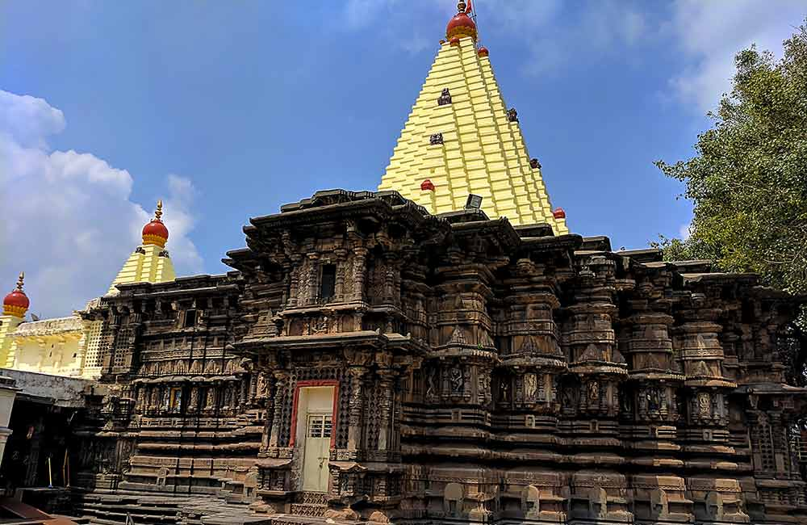
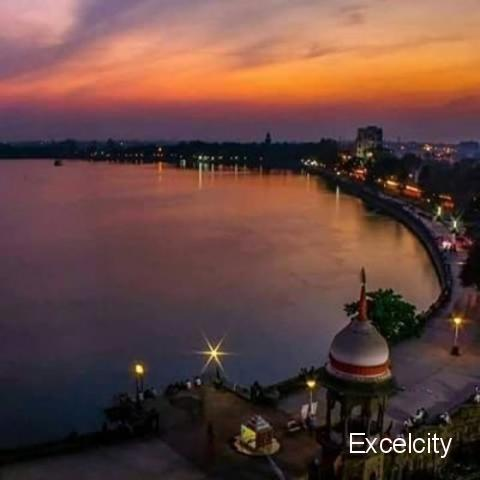
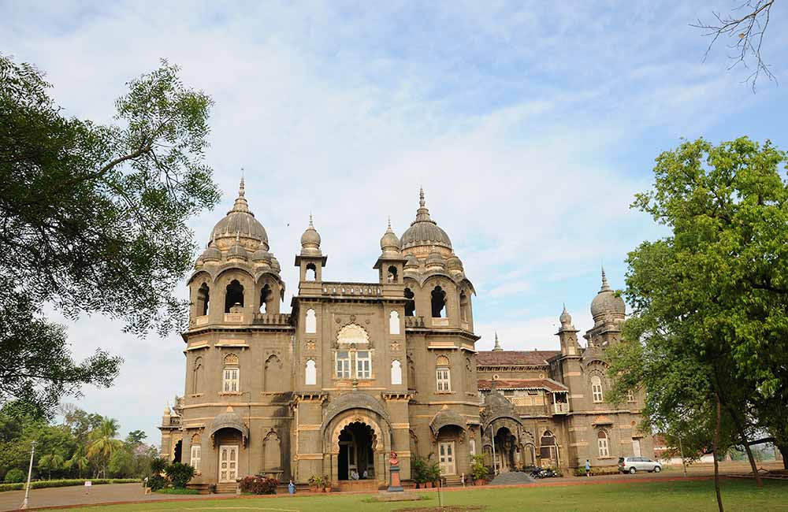
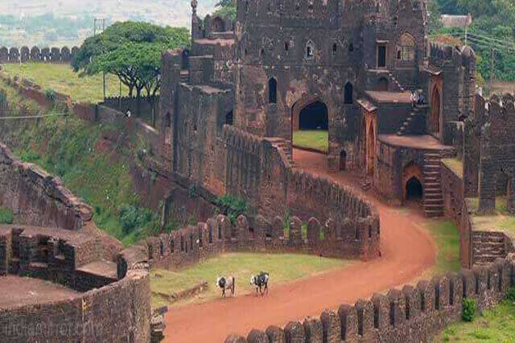
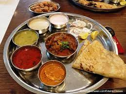
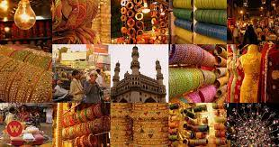
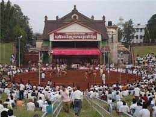

**Mahalaxmi temple**
The temple takes its name from Ambabai/Mahalaxmi,and it is believed that the divine couple reside in the area.The temple belongs architecturally to the Chalukya empire and may have been first builtin circa 700 AD. Mounted on a stone platform, the image of the four armed and crowned goddess is made of sandstone.The image of Mahalaxmi carved in black stone is 2feet 8.5 inches in height. The Shri Yantra is carved on one of the corner oposite to mahakali in the temple primises. A stone lion, the vahana of the goddess, stands behind the statue. The Sanskrit inscription on a stone tablet in the wall of the house of Annacharya Panditrao, now in the town hall museum says,"The great Kind Bhojadeva was reigning peacefully with pleasing conversation at Panhala; in 1190. He with a view to ensure the prosperity of his king-dom, The crown contains an image of the nag ling and yoni,the symbols of kal (the time) purush (the creater) and prakruti (the origin of universe) — . In Her four hands, the deity of Ambabai holds objects of symbolic value. The lower right hand holds a mhalunga (a citrus fruit), in the upper right, a large mace (kaumodaki) with its head touching the ground, in the upper left a shield (khetaka), and in the lower left, a bowl (panpatra). Unlike most Hindu sacred images, which face north or east, the image of this deity looks west (Pashchim). sunrays came directly from mahadwar in evening , the rays of the setting sun falls on the face of the idole for three days (31 january 01 02 february and 09,10,11 november. There are a number of other shrines in the courtyard to the datta mandir dkpalmandap, Navagrahas, Surya, Mahishasuramardini, Vitthal-Rakhmai, krishna, panchanganga & swami smarth dashavartar , Ram mandir, sheshashai , Mahavishnu,Hanuman ,Laxmi-narayan ,Khandoba ,Atibaleshwar ,krishna , kalbhairav ,Sidhivinyak ,Sinhwahini ,Tulja Bhavani ,Indrashabha ,Ek mukhi datta. Some of these images date back to the 11th century, while some are of recent origin. Also located in the courtyard there was the temple tank Manikarnika Kund, near datta mandir now there is a garden.
Location : Bhavani Mandap,Mahadwar Road, Kolhapur.
State : Maharashtra
Country : India

**Rankala**
Rankala Lake is a picturesque lake in the Kolhapur District of the state of Maharashtra in western India.Rankala Lake is on the western side of Ambabai temple , it is a popular evening spot and recreation centre. This lake was constructed by late Maharajah, Shri Shahu Chhatrapati. The Lake is surrounded by Chaupati and other gardens. In the backdrop stands majestic Shalini Palace. Shalini Palace is the only star-rated Palace Hotel in Maharashtra. Chaupati also brings memories of Chatak daar Bhel-Puri and Ragda-Patties and variety of food snacks. In past, Kolhapur was famous as a centre for Film Industry. Many Marathi movies, Hindi movies have been shot in studios in Kolhapur. ShantKiran Studio on Rankala Lake was shot in numerous movies. This studio was owned by V. Shantaram (V stands Vanakudre), gift to Indian Film industry. Today, those days in history is being remembered as golden past.
Location : located on the western side of Ambabai Mandir(Mahalaksmi Temple), Kolhapur.
State : Maharashtra
Country : India

**Newpalace**
New Palace, Kolhapur is a palace situated in Kolhapur, in the Indian state of Maharashtra. The Palace took 7 years to complete, from 1877 to 1884,costing about seven lakhs of rupees. Being an excellent specimen of Indian architecture built in black polished stone, it has been an attraction for tourists. It has extensive premises with a garden, fountain and wrestling ground. The whole building is eight-angled and has a tower in the middle. The clock on it was fixed in 1877. At separate distances there are small towers There is a zoo and a ground lake. Even today, it is the residence of Chhatrapati Shahu, the direct descendant of Chhatrapati Shivaji.
Location: New Palace situated in Kolhapur. in the Indian state of Maharashtra
state :Maharashtra
Country:india

**Panhala Fort**
Panhala fort (also known as Panhalgad, Panhalla (literally "the home of serpents")), is located in Panhala, 20 kilometres northwest of Kolhapur in Maharashtra, India. It is strategically located looking over a pass in the Sahyadri mountain range which was a major trade route from Bijapur in the interior of Maharashtra to the coastal areas.Due to its strategic location, it was the centre of several skirmishes in the Deccan involving the Marathas, the Mughals and the British East India Company, the most notable being the Battle of Pavan Khind. Here, the queen regent of Kolhapur, Tarabai, spent her formative years. Several parts of the fort and the structures within are still intact. It is also called as the 'Fort of Snakes' as it is zigzagged in shape.
Location: Pahana,a situated in Kolhapur.
state :Maharashtra
Country:india

**kolhapur food**
The cuisines of Kolhapur is largely influenced by its landscape, the crops grown in this region and the mixed population which comprises of Marathis, Gujratis, Brahmins, Marwadis and Muslims.
Tourist visiting Kolhapur can be assured of a memorable feast not only because of the subtle variety and strong flavours of the local cuisine but also because of the legendary hospitality of the Kolhapuri people. It should, however, be noted that the Kolhapuri dishes are generally spicy and may not suit everyone.
Tambra and Pandra Rassa: “Tambra Rassa”, is a red curry and a popular Kolhapuri starter. It is a very spicy dish made with the usage of special chilies which make it to appear "Tambra" (bronze red). This curry is more famous within the rural areas of Kolhapur. “Pandhra Rassa” a white curry is also a much liked starter of Kolhapur made with yoghurt and is also spicy. Besides the taste both these starters have medicinal benefits and are known to be effective against ailments related to cough and cold. After these starters Kolhapuri people feast on the specially made roasted mutton.

**Jwellery**
Most of the Maharashtrian jewelleries are derived from the legacies of Maratha and Peshwa dynasties. Kolhapur is famous for its special type of necklace called Kolhapur saaj. This jewellery is very much special for Maharashtrian women. Har and malas, mohanmal, bormal, chaplahar, kolhapuri saaj, pohehar and putlihar are the jewelleries that are made in Kolhapur. These names are derived from the peculiar shapes of the jewelleries. Thushi, a choker with closely bound tiny gold beads, is very popular in Kolhapur.
Patlya (two broad bangles), Bangdya (four simple bangles) and Tode (two finely carved thick bangles) are hand wear ornaments for the women of Maharashtra. Chinchpeti (choker), Tanmani (short necklace) and Nath (nose ring) are the ornaments making with a combination of pearls and red and white stones. Another jewellery called bajuband (the amulet) is also a favorite. Flower-shaped earrings are very popular amongst Maharastrian women.

**kolhapur wrestling(kusti)**
‘Kusti,’ wrestling is popular game at Kolhapur. Some of the Kings were themselves good wrestlers. Almost every week Kusti festivals were arranged here in their period. That time Kusti festivals were in open ground preparing temperory ‘Kusti Houda,’ special platform for Kusti. It was King Shahu, being himself a good wrestler was thinking to have permanent stadium for Kusti festival. When he was on Europe tour he saw famous stadium ‘Callocium’ at Rome and decided to build such stadium at Kolhapur. After returning from tour he constructed the Khasbaug Maidan style of ‘Callocium’ of Rome. Khasbaug Kusti Maidan is Unique in India. Over 60000 people can see the Kusti at the central Houda clearly without any disturbance. Separate platform is there for Royal family on eastside of the Hounda.
